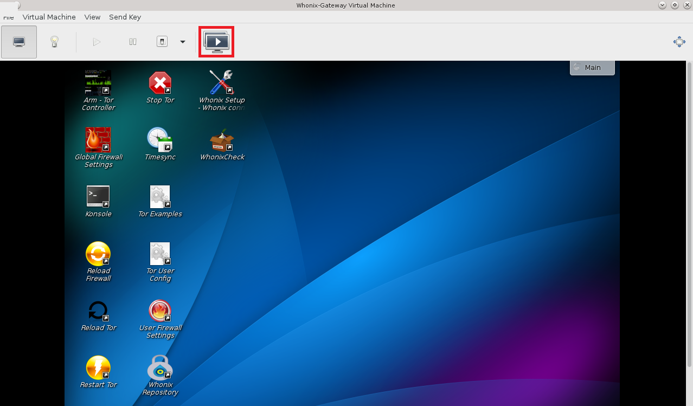
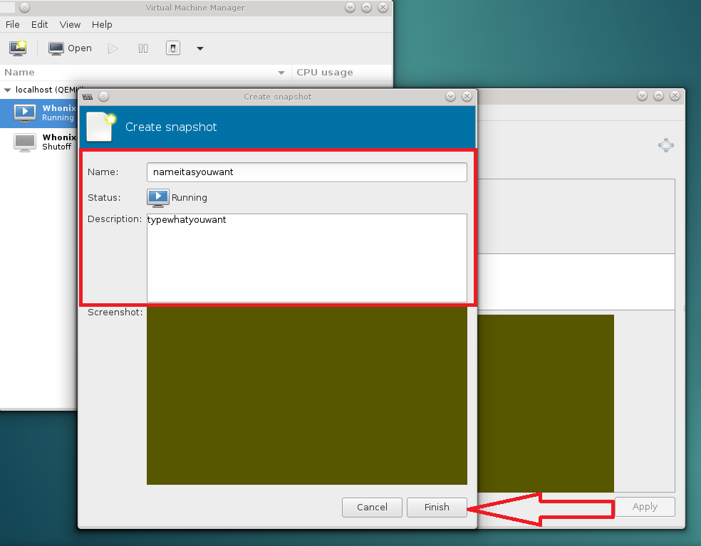

This page is for minimalized guide written by community members.
Note (1) You are encouraged to read the official KVM guide and documentation first and only refer here if are still unsure about what to do. Please report any uncertainties about the official guide on the KVM support forum.
'' Note (2) This fast instructions for amd processors with debian as a host if you want other installation commands for different distro please check Install KVM, if you are first time user please check this guide section.
'' Note (3) Copy&Paste each command separately then press Enter to run them.
- You need to add your username to the sudoers:
Setup sudoers. Add the operating system user name to sudoers.
Become root.
su
Add the user account to the sudoer's group. Replace user with the actual operating system user name.
adduser user sudo
Reboot so group changes take effect.
reboot
- Then follow the rest of the commands:
sudo apt update && sudo apt install --no-install-recommends qemu-kvm libvirt-daemon-system libvirt-clients virt-manager gir1.2-spiceclientgtk-3.0 dnsmasq qemu-utils -y sudo adduser "$(whoami)" libvirt sudo adduser "$(whoami)" kvm sudo reboot
- After Reboot:
virsh -c qemu:///system net-autostart default virsh -c qemu:///system net-start default
- For simplicity, you can copy and paste the following commands without changes, download and store Whonix image in your home folder (which is the default for most of the browsers to save downloads in /home/username but if you like to use the commands in /home/username/Downloads because you downloaded whonix kvm image there then up to you)
- To download the qcow2 images please press on Download Whonix icon
- After whonix kvm image finished downloading follow the rest of the commands:
tar -xvf Whonix*.libvirt.xz sudo virsh -c qemu:///system net-define Whonix_external*.xml sudo virsh -c qemu:///system net-define Whonix_internal*.xml sudo virsh -c qemu:///system net-autostart Whonix-External sudo virsh -c qemu:///system net-start Whonix-External sudo virsh -c qemu:///system net-autostart Whonix-Internal sudo virsh -c qemu:///system net-start Whonix-Internal sudo virsh -c qemu:///system define Whonix-Gateway*.xml sudo virsh -c qemu:///system define Whonix-Workstation*.xml sudo mv Whonix-Gateway*.qcow2 /var/lib/libvirt/images/Whonix-Gateway.qcow2 sudo mv Whonix-Workstation*.qcow2 /var/lib/libvirt/images/Whonix-Workstation.qcow2
- Depend on your desktop environment these images for KDE as e.g:
Start Menu -> Applications ->
System -> Virtual Machine Manager


Whonix-Gateway -> Open ->
Play symbol


To take snapshots, please follow the instructions below:
Manage VM snapshots -> Create new snapshot ->
Type Name & Description -> Finish





To start the snapshot, please follow the instructions below:-
Right click on snapshot -> Start snapshot ->
Yes